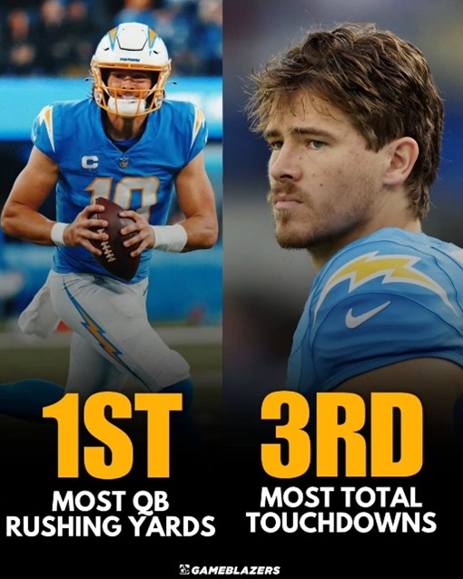
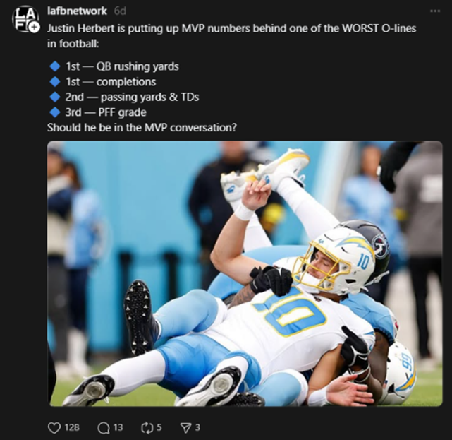

See the Analytics
A deeper dive into advanced metrics reveals why Herbert is not just a high-volume passer, but truly the league's Most Valuable Player. He is operating behind an offensive line that has been consistently decimated by injuries, resulting in him being pressured an astonishing 173 times—significantly more than any other quarterback in the league. Despite this constant duress and the challenge of having to throw or scramble quickly, Herbert has still managed to maintain an elite Pro Football Focus (PFF) grade of 91.8, ranking him among the very top signal-callers. This disparity between his poor protection and his top-tier output is the clearest analytical argument that he is doing "a lot with a little."

Justin Herbert's MVP case is significantly boosted by his decision to expand his game as a legitimate running threat, effectively neutralizing the intense pressure he constantly faces. He is currently leading all quarterbacks in rushing yards (over 300 yards through the first nine weeks of the season), frequently turning busted plays or coverage sacks into crucial gains and first downs. This newfound athleticism and willingness to run for yardage adds a critical, high-value dimension to the Chargers' offense and demonstrates his commitment to doing whatever it takes to win, cementing his value to the team.
Justin Herbert is the central pillar of a highly pass-dependent offense, shouldering the load for a team with notably limited consistency in its rushing attack. By Week 13, the Chargers were among the league leaders in pass attempts, demonstrating the team's reliance on his arm to generate virtually all of their offensive production and maintain competitiveness. This extreme passing volume further highlights his exceptional value, as he must deliver elite statistical output without the benefit of a dominant ground game to alleviate pressure or dictate defensive schemes.
